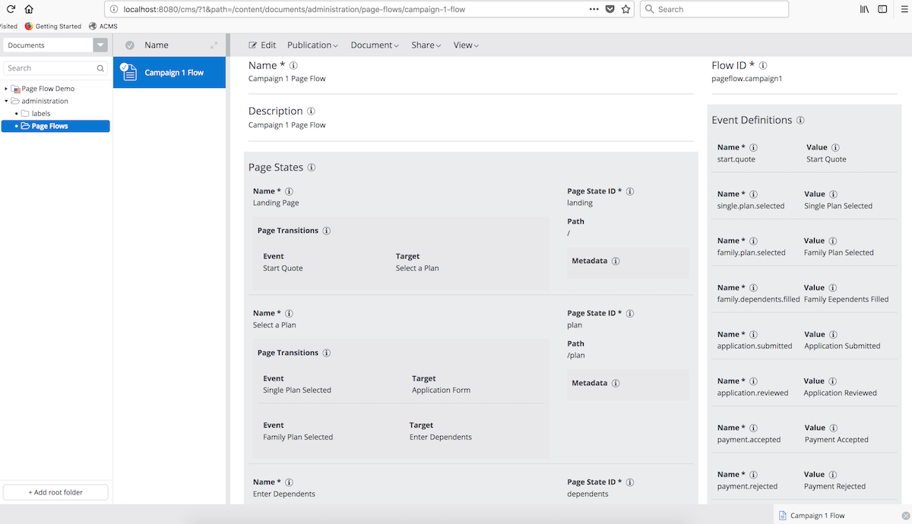
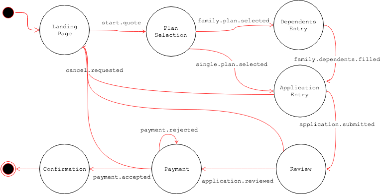

Developer's How-to
Introduction
Page Flow Module simplifies Page State definitions, Page State Transitions based on Events, Error Handling per Page State and metadata handlings in web applications.
Normally, each Page State is mapped to an HST Page with an unique URI path info. You may have multiple, different HstComponents in each HST Page like you do in normal HST-2 web application development.
As Page Flow Module aims to cover visitors' interactions across (multi-step) HST Pages, it is not interested in providing too tightly coupled framework with MVC form/action handling, unlike Spring Web Flow for example.
In that sense, it is the HstComponents responsibility to send an event to trigger Page State Transitions. Page Flow Module would not send events or trigger transitions on a Page Flow instance automatically based on HstComponent's status changes.
Also, it is not an interest of Page Flow Module to provide a bridging solution between HstComponent and other web flow control frameworks such as Spring Web Flow because that kind of approaches would simply force the flow interactions to stay in the specific HstComponent only, causing inflexibility in page/component compositions and significant limitations in Relevance personalization and Experiment (A/B Testing).
Page Flow Definition
First of all, you need to create and publish a Page Flow Definition which is applied to a Microsite campaign channel or selected sitemap items, like the following example document in CMS:
Fields of Page Flow Definition
| Field name | Description |
|---|---|
| Name | Human readable name of Page Flow Definition |
| Flow ID | Unique Identifier of Page Flow Definition, used by system |
| Description | Informative description of Page Flow Definition |
| Page States | Page State Compounds field |
| Event Definitions | Event Definitions field |
| Global Page Transitions | Globally applied Page Transitions on each Page State |
Fields of Each Page State Compound
| Field name | Description |
|---|---|
| Name | Human readable name of Page State Definition |
| Page State ID | Unique Identifier in a Page Flow Definition, used by system |
| Path | Logical (URI) Path Info to be interpreted by application |
| Metadata | Extra custom metadata, which can be used by application |
| Page Transitions | Page Transition Compounds field |
Fields of Each Page Transition Compound
| Field name | Description |
|---|---|
| Event | The source Event, to be selected from Event Definitions |
| Target | The target Page State to transition, to be selected from defined Page States |
Fields of Each Event Definition Compound
| Field name | Description |
|---|---|
| Name | The unique identifier of an event in Page Flow Definition |
| Value | The human readable name of an event |
The above Page Flow Definition document defines all the page states, events and transitions in the document editor. It shows all the definitions including Page States, Events and Page Transitions in flat lists. But, due to the Page Transition fields, each of which consists of a source Event and a target Page State, the whole Page Flow can represents the following Finite State Machine diagram:
Page State Definition and HST Page
As shown above, each Page State has Path field which is normally mapped to the URI path of an HST Page. So, while a Page Flow instance for a visitor is alive, the visitor should be passing along a specific Page State based on events and transitions. By default in HST-2 web application, each Page State is represented by an HST Page, which means that the request from a visitor hits an HST SiteMap Item and the associated HST Page is being rendered for the Page State.
This default behavior in HST-2 web application has the following advantages:
- You can separate each step of the visitor's interactions into a separate HST Page, so it is more flexible when composing each page with different components/templates and personalization.
- You can even set a specific step page URI as an Experiment goal easily.
- In an HST Page, one of
HstComponents may process an action to retrieve the currentPageFlowto send an event to trigger an automatic transition. Once a transition occurs by the event, the default Page Flow HstSiteMapItemHandler will redirect the page to the next step automatically. Therefore,HstComponents do not have to handle any physical navigation/redirection handling by themselves any more as it is handled by Page Flow Module.
Note: It is possible to customize the default HST-2 based Page Flow Control and interpret the logical Path information of each Page State in application-specific ways.
Events and Page State Transitions
Let's take a look at the CampaignQuoteComponent.java, as an example, shown in the first step landing page in the demo project:
public class CampaignQuoteComponent extends AbstractCampaignComponent {
private static final Pattern US_ZIP_PATTERN = Pattern.compile("^\\d{5}$");
@Override
public void doAction(HstRequest request, HstResponse response) throws HstComponentException {
final String zip = StringUtils.trim(request.getParameter("zip"));
final PageFlow pageFlow = getPageFlow();
final CampaignModel campaignModel = new CampaignModel();
campaignModel.setZip(zip);
pageFlow.setAttribute(CampaignConstants.DEFAULT_MODEL_NAME, campaignModel);
if (StringUtils.isNotEmpty(zip)) {
final Matcher m = US_ZIP_PATTERN.matcher(zip);
if (m.matches()) {
pageFlow.sendEvent(CampaignConstants.EVENT_START_QUOTE);
}
}
}
}
CampaignQuoteComponent#doAction() method is invoked when a visitor clicks on Start! button in the first landing page, doing the following:
- Read the only form input, "zip" code.
- Retrieve the current
PageFlowinstance which was resolved and provided by the Page Flow Module automatically. - Instantiate a new domain model object,
CampaignModel, set the zip code and store it intopageFlow, so that you can retrieve the domain model object later in other Page States. - Finally, if everything is okay, it sends an event named
CampaignConstants.EVENT_START_QUOTE(which should be same as one of the event names in the Page Flow Definition document). - Under the hood, Page Flow Module process the event and make transition(s) if needed. In this example, it will be transitioned to the next step ("Select a Plan") automatically.
In summary,
HstComponents should not try to redirect pages in most cases, but instead it simply retrieves the currently resolvedPageFlowand sends an event to trigger transitions.- To send an event from an
HstComponent, invokePageFlow#sendEvent(String eventName). Then Page Flow Module will automatically handle the event and make transition(s) if needed, as you defined the flow in the Page Flow Definition document.
APIs to Get Access to PageFlow and PageStates
You can retrieve the automatically resolved PageFlow instance like the following:
protected PageFlow getPageFlow() {
final HstRequestContext requestContext = RequestContextProvider.get();
final PageFlowControl flowControl = PageFlowControl.getDefault(requestContext.getServletRequest());
return flowControl.getPageFlow(requestContext.getServletRequest());
}
HstComponent code should retrieve the PageFlowControl by invoking PageFlowControl#getDefault(HttpServletRequest) first, and get the PageFlow throught PageFlowControl#getPageFlow(HttpServletRequest).
Page Flow Module automatically finds a PageFlow instance for the visitor by retrieving a stored one or instantiate a new one if it is a new visitor.
You can also retrieve all the defined PageState s from the PageFlow.
The following FreeMarker template example is from the navigation status bar at the page bottom in the demo project:
<#assign curPageState=pageFlow.pageState>
<#assign curPageStateIndex=curPageState.index>
<div class="text-left">
<#list pageFlow.pageStates as pageState>
<#if pageState.index < curPageStateIndex>
<span class="label label-success">${pageState.name}</span>
<#elseif pageState.index == curPageStateIndex>
<span class="label label-primary">${pageState.name}</span>
<#else>
<span class="label label-default">${pageState.name}</span>
</#if>
</#list>
</div>
PageFlow#getPageState() returns the current PageState. PageFlow#getPageStates() returns a collection of all the defined PageState s.
For more details, see JavaDocs.
APIs to Store Domain Objects in Page Flow
A Page Flow for a visitor is a longer journey than simple webpage. So, you might want to store some domain specific data for the visitor's journey. e.g, multi-step application form data.
As shown above, you may use PageFlow#setAttribute(String, Object) to store and retrieve arbitrary objects for your application.
For more details, see JavaDocs.
APIs for Error Handling in Page State
In an HstComponent, you might want to store all the collected errors while processing the form and use those error objects in view templates.
To store error objects, you can use PageState#addErrors(Errors), PageState#getErrorsMap(), etc.
For more details, see JavaDocs.
A good example for error handling HstComponent and FreeMarker template can be found in the following sources in the demo project: